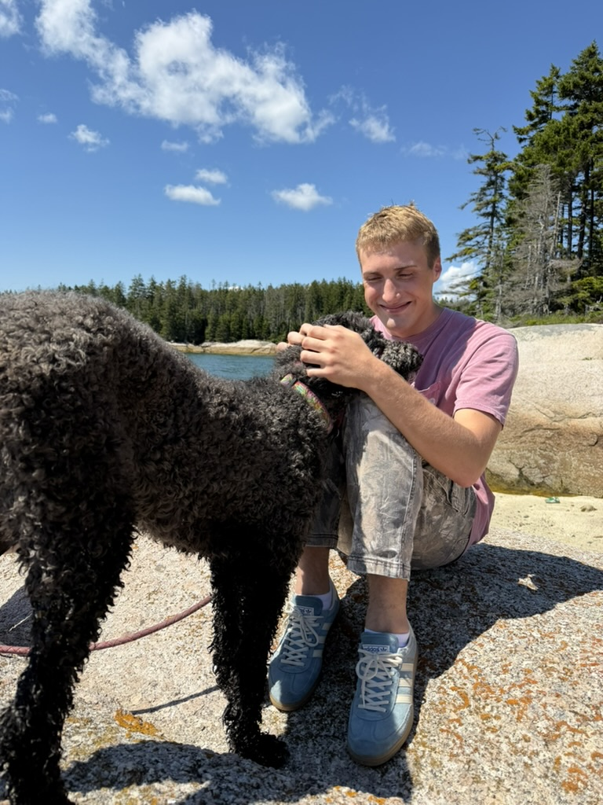
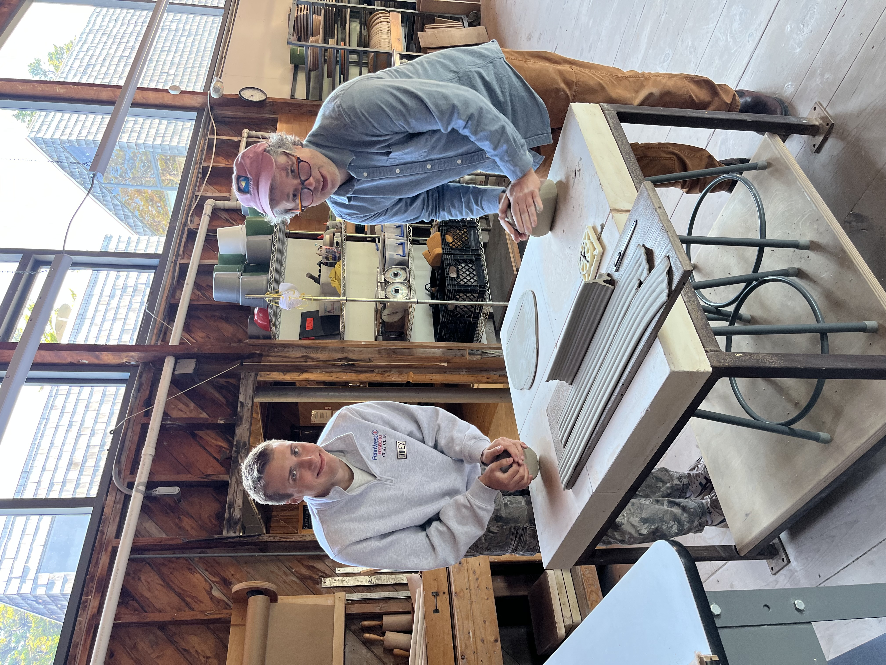

Practice / Perspective
Artist statement
My work is both wound and witness.
It draws from personal narrative, using clay to process and reframe lived experience within systems that demand concealment and conformity. Rather than charting transformation, I focus on how meaning is constructed, distorted, and carried.
Domestic objects, ritual symbols, and the rubble of everyday life serve as points of departure. Through these familiar forms, I construct social critiques that operate beneath the surface. The work often appears playful, using accessibility as both an entry point and a disruption. Beneath this surface, quieter tensions emerge, embedding contradiction, pressure, and emotional weight within the objects.
I am less interested in resolving these tensions than in sustaining them. Each object becomes a container for competing meanings, resisting clarity and inviting viewers to navigate its abstractions.

